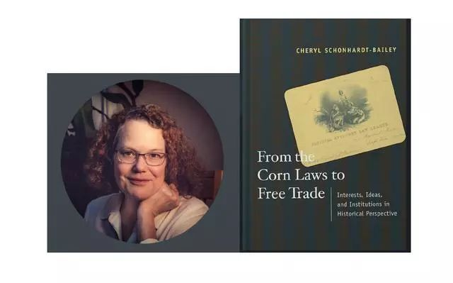

收录于合集
文献来源： Cheryl Schonhardt-Bailey, “Free Trade: The Repeal of the Corn Laws,”in Jerry Frieden, David Lake & Lawrence Broz, eds., International Political Economy: Perspectives on Global Power and Wealth , New York: W. W. Norton & Company, 2017, pp. 81-91.
作者简介： Cheryl Schonhardt- Bailey，伦敦政治经济学院政府系教授、英国国家学术院院士，她的研究兴趣为政治经济学、议会政治、政治审议以及定量文本分析。她发表了许多有关19世纪英国贸易政策的书籍和文章，其中最著名的是《从谷物法到自由贸易：历史视角下的利益、观念和制度》。

一、《谷物法》
在19世纪之前，英国政府对于谷物进出口的管制条例就已经存在。拿破仑战争时期，谷物价格很高，相反在和平时期，价格则很低。为了管控价格，英国议会于1815年颁布了《谷物法》，规定只有在小麦价格超过每夸脱（计量单位）80先令时，才准许进口谷物，体现了极强的贸易保护主义倾向。随后，虽然《谷物法》几经修改，但是已无法适应英国国内人口和经济的迅速变化。自1760年之后，英国的谷物已无法实现自给自足，同时，英国制造业和出口贸易的兴起，也使得工业家对《谷物法》日益不满。1836年，经济形势下滑和因粮食产量不足导致的食品价格上升，刺激资产阶级和工人阶级开始采取行动争取废除《谷物法》。资产阶级组成了反谷物法联盟，而工人阶级则发起了宪章运动。
二、 联盟机器
由1836年反谷物法协会演变而来的反谷物法联盟是英国历史上第一个现代意义上的全国性政治团体，参加者多为工业领域的制造商，最为著名的是两位棉花纺织业的制造商——理查德·科布登（Richard Cobden）和约翰·布莱特（John Bright）。两人在反对《谷物法》的斗争中都成为了议员。在1846年废除《谷物法》的运动中，作为一个高度组织化的政治压力集团，反谷物法联盟发挥了重要的影响力，被历史学家称为“联盟机器”，该联盟实行的策略有2个特征，一是用大量的资金支持全国范围内的政治宣传，二是通过开展选民登记运动掌握和控制各个选区。1844年，在该联盟的胜利已经显而易见的背景下，一个由土地所有者和农民为代表的贸易保护主义集团诞生，但后者十分松散，并未发挥重大影响力。
三、利害攸关的议题
关于《谷物法》的争论，作者将其分为了2大类，第一类是关于国家福利的争论，第二类则与阶级或者团体的利益有关。第一类争论主要围绕4个议题。第一个议题是有关单边主义与互惠的争论。焦点在于当时还没有国家实行自由贸易，英国首先单方面开放市场，其他国家是否会追随英国以达成国家间贸易的互惠。贸易保护主义者认为外国将对新兴工业的保护视为通向工业化的必由之路，国家间的互惠贸易不会出现。第二个议题是关于制造业领域的外国竞争威胁。有历史学家认为英国开放自由贸易是为了延缓制造业领域面临的外国竞争。第三个议题是自给自足与国家安全，贸易保护主义者认为依赖外国食物供应会对国家安全造成威胁，许多国家都不愿意丧失本国粮食自给自足的能力。第四个议题是关于政府的税收。由于关税在英国政府税收中占据了不小的比例，因此贸易保护主义者认为开放自由贸易将会使得英国面临着无法支付债务利息的风险。而赞成自由贸易的人则认为实行固定关税不仅能避免投机行为的出现，还可以增加政府的税收，但是《谷物法》的存在使得粮食价格居高不下，反而限制了消费税的增加。
第二类争论围绕着各阶级或团体的利益展开。以工业家为代表的自由贸易者和以土地所有者为代表的贸易保护主义者都声称是为了维护工人和农民的利益，都有助于增加公共福利，并且为自己寻求道德上的辩护。通过将自由贸易与自由、公平、和平、文明等普世价值相联系，自由贸易者往往能比贸易保护主义者拥有更好的道德基础。各个政治团体和阶级之间的争论主要集中在如下6个议题。第一是面包价格与工资的关系，这也是自由贸易者和贸易保护主义者争论的焦点。贸易保护主义者认为废除谷物法会使得面包价格下降从而导致工人工资下降，而自由贸易者则认为，正是《谷物法》的存在才阻碍工资的上涨。第二是工业中产阶级与有土地的贵族之间的阶级冲突。反谷物法联盟不仅将自己视为中产阶级和工人阶级的捍卫者，甚至有时还充当农民的代言人。第三是土地所有者将要承担的沉重税负。支持《谷物法》的人认为土地所有者承担了过多的税负因而有理由通过贸易保护寻求补偿，而自由贸易者的观点则相反。第四是农民能从贸易保护中获得多少好处。反谷物法联盟站在农民的角度，批评土地所有者的租赁收入，指出从长期来看，《谷物法》给地主带来的好处多于农民，而贸易保护主义者则予以反驳。第五是关于农业是否是一个值得保护的独特产业，英国农民和地主都认为农业是一个独特的产业因此应该享有一些特权，而自由贸易者则认为土地和其它生产要素一样并没有什么不同。最后一个议题是关于《谷物法》对出口贸易的影响，这涉及到了工业化的核心特征——工业部门的崛起和农业部门的衰落。自由贸易者认为，英国的未来财富收入都依赖于工业而非农业。土地所有者则反驳说国内贸易比出口贸易更为重要，因为出口贸易依赖于国外市场因此并不可靠。
四、结论
时任英国首相皮尔（Robert Peel）支持贸易自由化，并运用高超的政治技巧使得制造商和农民之间达成妥协。皮尔说服制造业生产者放弃他们在某些商品上还持有的关税保护，以达成统一的关税政策（除丝绸外，进口产品关税不得超过10%）。在缓和阶级冲突方面，皮尔政府尽可能安抚工人阶级，同时通过一系列手段刺激农业发展来减轻土地所有者身上的沉重税负。在废除《谷物法》的过程中，对立的阶级和政治集团围绕着国家福利和经济利益展开复杂的争论，这在皮尔试图废除《谷物法》的演讲中体现得淋漓尽致，因此时至今日，学界对于英国为何要废除谷物法仍然存在着多种解释。
译文：施 榕 审校：杨端程 编辑：康张城
【政文观止Poliview】系头条号签约作者